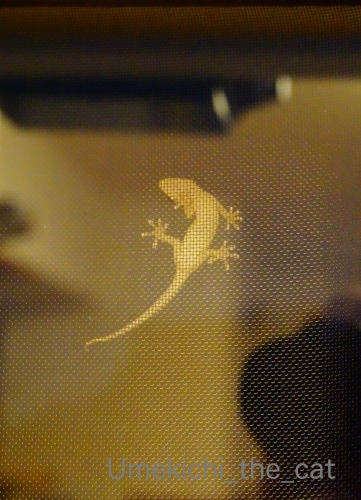
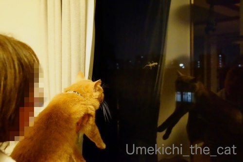
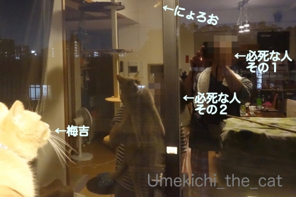
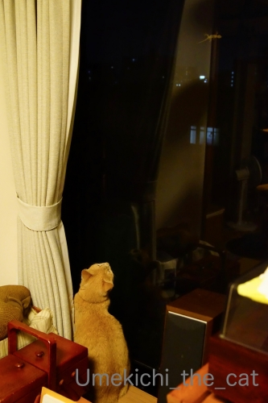
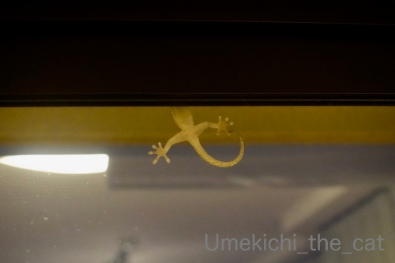
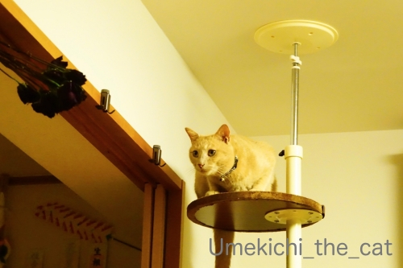

四番目の家族！？ [梅吉]
※予約投稿の日付を間違って設定していました(⌒-⌒;
ここまま続行！
よって明日のブログアップはお休みです。。。9月1日am7:00記
〜今日はにょろっとぬるっとしたものが登場します。嫌いな方はスルーしてくださいね〜
その存在にはいつの頃からかは覚えていませんが気づいていました。
おそらく数ヶ月の単位で年に近いくらい。
ベランダで植物の水やりをしていると視界ににょろにょろと動くものが見えていたのです。
狭い場所に一緒にいると思うと恐怖ですが
幸いにも我が家のベランダは広いので大きな気持ちでいました。
自分の居住空間に一緒にいるのは嫌だし触れ合うのは無理だけど
見たりするのは全然平気。
動物園でも爬虫類館は平気で入れます。昆虫館はNG。
この夏の初めの事。ベランダに出た梅吉とそれが鉢合わせ。
と空を切る猫パンチをお見舞いする梅吉。それは一瞬でいなくなってしまいました。
その後は暑すぎて私も梅吉もベランダに出ない日々。
時々家の中からベランダを見てもその姿を見かける事もなく・・・
怖い思いをして居場所を変えたかな？と思っていたら

いた！にょろお！！網戸に張り付いています。
にゃぱーっとひらいた足の指がかわいいではないですか。

梅吉に見てもらおうと必死なおかーさん。
ささっと動くものはすぐ見つけますがじっと動かないのって見つけられないんですよねw
猫ってwww
この時も目線は合ってるんですが全然見えてません(⌒-⌒;

「ほら！にょろお来てるよ！！見て、見て、お願いだから見てー、梅吉ーーー！！！」と
必死なおかーさんとその様子を撮影しようと必死なおとーさん。

どうやらやっと見つけた様です。
が、一瞬で見失うのも猫www
(12秒です。音は出ません）
そもそもこの動画の初めから見失っている模様(*>艸<)

にょろおはしばらく網戸の上をウロウロとした後見えなくなりました。
で、この生物なんでしょう？
ベランダで見かけたときは「カナヘビってやつ？」と思っていたのですが
カナヘビって窓に張り付いたりするのでしょうか。
イモリ？ヤモリ？？トカゲ？？？恥ずかしながら私はこれらの違いもわかりません。
どなたか詳しい方、教えていただけるとうれしゅうございますm(_ _)m

にょろおがまだ張り付いたままなのに早々に興味を失った梅吉さん。
狙っているのは乾燥中のバラの花束。
お願いだから飛びつかないでね。
2019-09-01 00:00
nice!(80)
コメント(27)

カフェオレ色の梅吉

梅吉 2023年8月10日 永眠


梅吉と出会った譲渡会

犬猫の理由なき殺処分ゼロ
妄想広告
UMEKICHI 光

爆発的に早い！
時々攻撃的！
Thanks to Mr.Boss365
爆発的に早い！
時々攻撃的！
Thanks to Mr.Boss365

まさに親の心子知らずですね♪
よく奈良公園でカメラ目線しない子供をよく見かけます(笑)
そしておそらく今ごろは薔薇はバラバラ・・・
by yamatonosuke (2019-09-01 00:58)
あらぁ、ヤモリさん！
ぬるっともしてないし、大人しいし、家を守ると言いますから、全然怖くないですよ。
これまで住んだどの家の窓にも外側に、はりついていました、たまにだけど。
先日、蛇が縁側の下に入ってったのを目撃、まあ毒はないだろうけど？これはちょっと怖かった‥＾＾；
by sana (2019-09-01 01:01)
私もヤモリだと思います。ラッキーアニマルです。
猫は近眼(?)らしく素早く動くものにしか反応しません。
おとーさんとおかーさんの必死な様子に笑っちゃいました。
by zombiekong (2019-09-01 02:08)
ニョロニョロさんの足裏 ほんと可愛いね(^^)お花が咲いてるみたいです
by チャー (2019-09-01 06:51)
ヤモリさんはお家を守ってくれるありがたいお方です。
でも、我が家ではニャンの標的にされて気の毒です＾＾；
by ぽちの輔 (2019-09-01 07:01)
ヤモリは久しぶりに見ました。
ゆ～っくり動く物にはやはり反応が鈍いんですね。
逆に庭のカナヘビは半外猫たちのオモチャになっていて可愛そうです(^^;)
by kou (2019-09-01 09:04)
梅吉さん、ヤモリ見れたかな？
by ニコニコファイト (2019-09-01 10:00)
ヤモリですね、イモリは水に住むので。
梅吉さん見ているかな？
by ma2ma2 (2019-09-01 10:04)
ヤモリさん、にゃぱ～っと開いた手足がかわいい(#^^#)
にょろおさんはお家の守り神、梅吉さんも仲良くしてね♪
ウチのも見つけてほしくないゴミは目ざとく見つけるのに、窓の外の虫とか雪とか見せてあげようとこっちが思うものには気が付かなかったりします^^;
必死のおっとさん、ちぃさんの姿は、我が家の様子をそのまま見ているようで爆笑です(≧▽≦)
by ゆきち (2019-09-01 11:50)
こんにちは。
網戸にいますね！！久し振りに裏面からの姿を見ました。
梅吉くんも「動くもの」でないと反応出来ない感じですね。
動画？美しいお部屋が写り込んでますね（笑）梅吉くん、下見て寂しそうな感じ（涙）
小生も「ヤモリ？」と思いますが、アニエス・ベーさんのトカゲの可能性もありです。
トカゲ？だったらペットとして飼うのも良いかと思います。
狙っているのは薔薇？トカゲから「トゲのない薔薇」狙いですね？スルーです！？(=^･ｪ･^=)
by Boss365 (2019-09-01 12:28)
ヤモリの指ってめちゃくちゃ可愛いよねっ♪
by yuppie (2019-09-01 13:45)
ヤモリは先日我が家にも出ました。
お風呂に入ろうと窓を閉めようとしたら、お風呂場へ
落ちてきちゃってびっくり！家を守るでヤモリだから
生かして追い出そうとしたら、しっぽ落として走り回り
仕方なく手で捕まえて、窓の外へポイッ
虫は大嫌いですが、爬虫類ならなんとか触れました。
by caterham_7 (2019-09-01 15:23)
ヤモリさーーん。苦手ですけど、良い人なので、そっとしておいてますー。
うちもかつて、1回か2回、ご登場されました。
猫って、基本、視力悪いので、良く見えてないんですよねー。
なのに、何かを凝視している時、何?! 何?! 何見てるの？！ってなっちゃいます。
by ChatBleu (2019-09-01 15:25)
ヤモリですね。
我が家にも住んでいます。
これを見ると嬉しくなる私です。
夜に窓にへばりついています＾＾
by riverwalk (2019-09-01 20:25)
おとーさん、おかーさん、
お二人の必死さが可愛いです（笑）
家守でしょうか？
以前住んでいた、隣の家で飼っていたらしく、逃げて我が家に来たことがありました（トカゲだったかも）
昆虫も爬虫類も苦手ですが、吸盤？の手がいいですね。
by kiki (2019-09-01 21:25)
ヤモリ君、目がクリクリで可愛いですよ。^^)
明かりに寄って来た虫を食べに来るので
またやってくるかもしれませんね。
by yes_hama (2019-09-01 21:57)
ヤモリ君ですね
手足がないにょろにょろは苦手なのですが、これは平気（＾＾；）
梅吉君、「？」って感じだったのかな？
お花の名前ありがとうございます
ヤブミョウガで間違いないです（＾＾）
by 藤並 香衣 (2019-09-01 22:05)
ヤモリさんだと思います＾＾
お母さんとお父さんは必死なのに、
梅吉さんはなかなかお気づきにならなかったんですねぇ(⌒-⌒; )
サイズが小さくて動かないから難しいのかなぁ( ^ω^ )
ドライフラワー中のバラも動かないけど
サイズが大きいから獲物認定済み？w
by ニッキー (2019-09-02 07:07)
ヤモリさん、こうして見ると、指の形が
くっきり見えますねー。
そしてそれを見せようと、あたふたする
必死の人間が2人ー(≧∀≦)
お疲れ様でしたっ！！
by よーちゃん (2019-09-02 07:42)
ヤモリくん、うちにも住んでます(^^)
家を守るのでヤモリくん。家にいてくれると縁起がいいですよ〜。
イモリくんは井戸を守るのでイモリくん。
水辺にいます。
by も〜 (2019-09-02 10:22)
ヤモリさんですよね＾＾
私もこーゆーの苦手で、一度部屋の窓に張り付いて
いるのが見えたので、追い払おうと窓を開けたら
逆に部屋に落ちてきて、それはもう大騒ぎｗｗ
おかーーさーーん、ちょっと来てぇぇと
何事？ってくらいの声出して対応してもらいました(笑)
ミュウはこういうの好きらしく、窓にへばりついて
見ていました＾＾お腹同士のお付き合いですねｗｗ
by カトリーヌ (2019-09-02 12:01)
みなさんのご意見はヤモリさんのようですね。
私も違いが判らない女なので(;^_^A 遭遇してもわからない。
ガラス越しに見ているだけなら問題なしですが、同じ空間にはお近づきにはなりたくないかな。でもゲジゲジとかムカデよりは爬虫類の方がましかな。
動いてないと見失う、あるあるです。タルちゃんは本物志向なので虫は大好きですが、じっとしているモノは見えないようです。猫って近眼なのでしたっけ。
にょろお君また遭遇すると思われますね。
by marimo (2019-09-02 16:35)
こんにちは。別件ですが・・・
梅シロップがボスママに好評？冷凍梅でまた作りました。ありがとうです。
「メンクラの読者街頭スナップ」ありました。
次回は〇〇街で撮影？みたいな、田舎育ちの小生は憧れました。
親近感を寄せて頂き感謝。ご主人によろしくお伝え下さい（笑）
その後、にょろお君？帰宅されましたか！？(=^･ｪ･^=)
by Boss365 (2019-09-02 16:45)
ヤモリは家守。家を守ってくれるって言われてますよ（*^_^*）
梅吉君も気づいたら狩るかな？・・・動かないものには猫って弱いですよね(;^ω^)
by palpal (2019-09-02 21:29)
予約投稿の日付を間違うくらいブログネタがあっていいね？（ﾟ□ﾟ）
その、にょろはヤモリだね。
私んちも前に出没した事があるよ（ﾟ□ﾟ）
by 英ちゃん (2019-09-03 23:02)
あううううう
なんて可愛いヤモリちゃん♪
もし遭遇したら、わたしは喜んで家に迎え入れるよお(笑)
あのニャパっとした手がたまらなくかわいい^^
うちには来てくれないなあ。
12階まではさすがに上ってこないのかな・・・
そもそも家の周りで見たことがないよ。。。蚊ばっかりｗｗ
by リュカ (2019-09-04 11:57)
やもりちゃんが来たんだ！！！
んで、梅吉ちゃん、なかなか気が付かない＾＾；
気が付いて、遊んで欲しいです＾＾
うちの子、全員じゃないですが
やや一匹はやもりに異常に反応する子がいます。
うちはもうずっとこの時期やもりがくるのですが、間違って家に入ってきたりしまして・・・それをガンミしてっていう状況です。ちぃさんが撮られた窓にペタッやもりが登場して、人間が気が付かなくてもやや一匹、たまに二匹はその窓にへばりついてますｗ
by ake_i (2019-09-06 15:13)